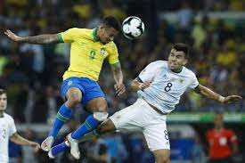

Home
History
Training
Team
Pitch
Facts
Home
History
Training
Team
Pitch
Facts
The training
1. Passing Drill
The ability to pass the ball accurately is one of the most fundamental elements of playing soccer. There are two reasons for this –

It allows your team to effectively move the ball up the field towards your opponent’s goal and hopefully create a goal-scoring opportunity.
It keeps the ball in your team’s possession. And the reality is that the less time the other team has with the ball, the less opportunity they will have to score a goal against you.
Every beginner should spend time working on this skill. Regularly practicing this drill will make a huge difference.
Aim of this drill
The aim of this drill is to improve the accuracy of your passing. If you can successfully pass the ball through a small space during a game, or straight to the feet of another player when needed, then you will improve the performance of your whole team.2. Shooting Drill
You won’t score a goal if you don’t take a shot!

Shooting and scoring a goal is one of the most exciting parts of soccer. Every player wants to score goals for their team and be the hero, but shooting accurately and effectively takes many hours of practice to fine-tune those skills and be ready to make a difference when you’re on the soccer field.
Aim of the drill
The aim of this drill is to improve the accuracy of your shooting. To be able to hit the target you’re aiming at when kicking the ball is a huge asset to any soccer player. As you keep practicing you will learn how to shoot well and improve your ability in front of goal.3. Dribbling Drill
In soccer, dribbling means moving forward with the ball at your feet while staying in control and in possession of the ball. It is a skill that can be hard to master, but when you do, it can make a huge difference in a game.
It’s also very satisfying to take on an opponent and dribble the ball past them!
If you can take the time to work on this drill and master the techniques taught here, then soon you will be taking on other players and moving the ball up the field of play without worrying about the opposition taking the ball away from you.
Aim of this drill
The aim of this drill is to improve your skill in controlling the ball while on the move. The more you practice this, the faster you will be able to move through the cones without letting the ball run away from you at any point. You will also improve your ability to quickly change direction with the ball at your feet.4. Defending Drill
Sir Alex Ferguson, one of the most successful soccer coaches in the history of the game, famously said “Attack wins you games, defence wins you titles”
Having strong and effective defensive skills is essential for any soccer player that wants to be a title winner.
A good defender will not only be an expert at protecting their team’s goal but also capable of starting an attacking move from the back of the field.
Aim of this drill
The aim of this drill is to improve your skills and abilities at keeping an attacking player away from the goal you’re defending. You will learn how to close down the space the attacker wants to move into, and you will improve your timing when making tackles.5. Goalkeeper Drill
If you play in the position of goalkeeper or hope to one day, then you need to spend time on this drill.
Playing as a goalkeeper is a unique position in a team, but also an incredibly important one. There have been many games I have been involved in where I’ve seen the goalkeeper be the difference between a team winning or losing a game.
This drill will both make you a better goalkeeper and a better team.
Aim of this drill
The aim of this drill is to improve the concentration and reaction time of the goalkeeper. As the goalkeeper moves and returns to position, they must be constantly aware of where they are in relation to the goal and where the ball is.6. Attacking Drill
The attacking players on a team are often the players who are looked up to the most.
They can often be seen as being the most creative, the most talented, and the most needed. While this is an unfair representation of the rest of the team, an attacker does have a unique and important role to play.
The best-attacking players only get to the top of the game by putting in hours of hard work. Over and over again they practice being in an attacking situation to fully prepare themselves for what it will be like in a real game.
Aim of the drill
The aim of this drill is to simulate an attacking scenario.7. Fitness Drill
Keeping fit is a requirement of any sport. When an athlete is fit they are faster, stronger, and more agile than they would otherwise be.
The soccer players that can keep going at their highest level for the longest during a game are usually the ones who are the most successful. Those are the ones that the other players look to as they know they can rely on them especially near the end of a game.
Aim of the drill
The aim of this drill is to increase the fitness level of the individual player. In a game of soccer, it is so important that each player can withstand the demands of the game and keep operating at peak capacity for the entire time. Completing this drill regularly will significantly improve the player’s capabilities throughout a soccer game.8. Crossing Drill
Crossing the ball into the penalty area is one of the most effective ways to create a goal-scoring opportunity in a game of soccer.
You will see it in almost every game you watch or play in. A player, dribbling with the ball down the touchline, looks up, see’s another player in the penalty area, crosses the ball to them, and the attacking player gets a chance to shoot at the goal.
An accurately placed cross can give an attacking player the perfect setup to score a goal and can make their job many times easier.
This is crucial especially at high school level, and you should check out my guide – 7 Effective Soccer Drills for High School – if you’re working with this age group at all.
Aim of the drill
The aim of this drill is to improve the player’s ability to cross the ball accurately.9. Heading Drill
Heading the ball is one of those things that you have to be prepared to do if you want to play soccer at all. It is an important and often used skill in every game that you will play in.
Because of that, it is worth taking the time to become highly proficient at heading the ball. This will make you a huge asset to any team.
Whether in defense or attack you will benefit from being able to head the ball accurately, powerfully, and confidently.
Aim of the drill
The aim of this drill is to increase the consistency of a player’s ability to head the ball accurately. Performing this drill in different positions develops different muscles and techniques needed to head a ball effectively during a soccer game.10. Ball Control Drill
Being able to stay in control of the ball, especially under pressure, is a skill that every player needs to have.
No one wants to be that player who is forever losing possession of the ball whenever they try to do anything outside of the basics.
Having great control of the ball also gives you the ability to pull off one of those tricks you see the top players doing during a game and be the envy of all the other players!
Aim of the drill
The aim of this drill is to increase a player’s ability to use and control the soccer ball in the way that they want to.
As a player becomes more skilled and confident with the ball, and as they improve at keeping the ball in their control for longer periods, their ability to use the ball effectively during a game will dramatically increase.